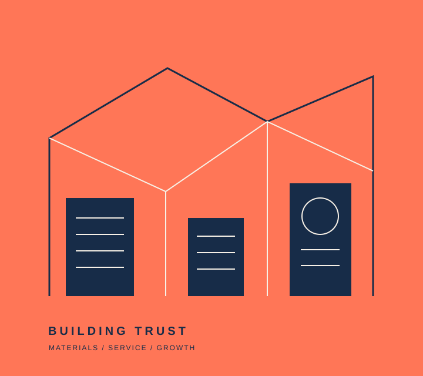

MARKETING MANAGER · APPLICATION STRATEGY
เปลี่ยนความแข็งแรง
ในพื้นที่ ให้เป็น
การเติบโตที่วัดผลได้
มุมมองเชิงกลยุทธ์สำหรับ Hughome — จากการเข้าใจตลาด คู่แข่ง และลูกค้า สู่ระบบการตลาดที่เชื่อมยอดขาย ทีม และงบประมาณ
PREPARED FOR
CHIANGMAI MY HOME · HUGHOMEROLE
MARKETING MANAGERFORMAT
3–4 MIN READ
CHIANGMAI MY HOME · HUGHOMEROLE
MARKETING MANAGERFORMAT
3–4 MIN READ

PROFESSIONAL SYSTEM.
01 · ROLE INTERPRETATION
WHAT THE BUSINESS IS REALLY ASKING FOR
งานนี้ไม่ใช่แค่ “ทำการตลาด”
แต่คือการสร้างระบบเติบโตทั้งองค์กร
ขอบเขตงานความหมายทางธุรกิจสิ่งที่ต้องส่งมอบ
02 · BUSINESS & MARKET DIAGNOSIS
WHERE HUGHOME STANDS
ฐานธุรกิจพร้อม แต่สนามแข่งขัน
กำลังบังคับให้ขยับเร็วขึ้น
BUSINESS BASE
2558ก่อตั้ง50–100พนักงาน3กลุ่มลูกค้า B2B
ขายทั้งปลีกและส่ง ครอบคลุมเครื่องมือช่าง ไฟฟ้า ประปา สุขภัณฑ์ กระเบื้อง สินค้าโครงสร้าง ปูน และเหล็ก
ผู้รับเหมาร้านค้าวัสดุเจ้าของโครงการ
ตลาดที่อยู่อาศัยชะลอ
ความต้องการบางหมวดอ่อนตัว คู่แข่งกดดันราคา ต้นทุน และความเร็ว
โครงสร้างพื้นฐาน 2568–2569
ปูน เหล็ก และสินค้าโครงสร้างมีโอกาสฟื้น พร้อมโอกาสจากงานซ่อม–ต่อเติม
ขยาย Pipeline ก่อนตลาดฟื้น
เพิ่มลูกค้าโครงการ รักษาฐานเดิม และเพิ่มยอดซื้อต่อรายด้วยข้อมูลและ CRM
Source: ภาพรวมบริษัทและผลิตภัณฑ์ หน้า 1–3 และข้อมูลบริษัทที่เผยแพร่สาธารณะ
03 · COMPETITIVE LANDSCAPE
THE MARKET IS CROWDED — BUT NOT IDENTICAL
คู่แข่งแต่ละกลุ่มชนะคนละเกม
โอกาสของ Hughome คือพื้นที่ระหว่าง “ความครบแบบ Modern Trade” และ “ความใกล้ชิดแบบร้านท้องถิ่น”
ความครบและระบบความสัมพันธ์และบริการเฉพาะพื้นที่
HomePro
ไทวัสดุ
GLOBAL
HOUSE
HOUSE
SCG HOME
LOCAL
RETAILERS
RETAILERS
HUGHOME
LOCAL B2B
SOLUTION PARTNER
SOLUTION PARTNER
HomePro
ระบบ Omnichannel บริการบ้าน และเครือข่ายสาขา
ไทวัสดุ
ความครบ ปริมาณ และการสื่อสารด้านราคา
Global House
วัสดุก่อสร้างครบ ส่งถึงบ้าน และ Click & Collect
SCG Home / Solution
ความเชื่อมั่นของแบรนด์ สินค้าพร้อมบริการติดตั้ง
ใบเสนอราคาเร็ว · สินค้าครบ · ส่งหน้างาน · ดูแลต่อเนื่อง · เข้าใจตลาดเชียงใหม่
Competitor references: official websites of HomePro, Thai Watsadu, Global House and SCG Home
04 · STRATEGIC DIRECTION
THE POSITION TO BUILD
LOCAL STRENGTH.
PROFESSIONAL SYSTEM.
รักษาความใกล้ชิดแบบร้านท้องถิ่น เพิ่มระบบและประสบการณ์แบบมืออาชีพ
OWN THE CONTRACTOR RELATIONSHIP
ใบเสนอราคาเร็ว · Stock update · ส่งตรงไซต์ · Follow-up ตามรอบโครงการ
ผลลัพธ์: รักษาฐานเดิมและเพิ่ม Share of walletCONNECT ONLINE TO OFFLINE SALES
Social สร้าง Demand · LINE OA เก็บ Lead · Sales ปิด · CRM ดึงกลับมาซื้อซ้ำ
ผลลัพธ์: ทุกช่องทางเชื่อมถึงยอดขายTURN PARTNERS INTO DEMAND
Co-branded campaign · Product education · Seasonal bundle · Partner event
ผลลัพธ์: ลดต้นทุนสื่อและเพิ่มความน่าเชื่อถือNOT WINNING ONราคาต่ำที่สุดทุกสินค้าWINNING ONครบ + เร็ว + รู้จริง + ไว้ใจได้
05 · GROWTH INITIATIVES
WHAT I WOULD LAUNCH
สาม Initiative ที่เริ่มได้ วัดได้ และขยายต่อได้
LINE OAส่ง BOQ
รับใบเสนอราคา
รับใบเสนอราคา
B2B ACQUISITION
Contractor Fast Quote
สร้างจุดรับ RFQ ผ่าน LINE OA, Website, BUILK และ RakMao พร้อมกำหนด SLA การตอบกลับ
- RFQ volume
- Response time
- Conversion
- Revenue / lead
SEASONAL SETพร้อมรับฝน
พร้อมทุกงานบ้าน
พร้อมทุกงานบ้าน
SEASONAL GROWTH
Rain-ready Home
ต่อยอดโปรถังน้ำและปั๊มน้ำเดิม เพิ่มอุปกรณ์ติดตั้ง คำแนะนำ และบริการที่เกี่ยวข้อง
- Bundle sales
- Average order
- Cost / lead
- Campaign ROI
PARTNER WEEKความรู้จากแบรนด์
ข้อเสนอจาก Hughome
ข้อเสนอจาก Hughome
PARTNER-LED DEMAND
Solution Partner Week
ต่อยอด TOA, GreenPlastwood และคู่ค้าหลักด้วย Live, Workshop และ Co-promotion
- Event leads
- Partner funding
- Sales uplift
- New customers
06 · TEAM, BUDGET & REPORTING
ONE TEAM · ONE COMMERCIAL SCOREBOARD
แผนจะเดินได้ เมื่อทีม ข้อมูล และงบเดินพร้อมกัน
Commercial Pulse
ยอดขาย · Lead · Stock · Campaign issue
Performance Review
ROI · ลูกค้าใหม่ · ซื้อซ้ำ · Budget variance
Growth Review
Segment growth · Channel mix · Budget reallocation
BUDGET RULEเพิ่มงบให้สิ่งที่พิสูจน์ ROI — ลดหรือหยุดสิ่งที่ไม่มี Lead, Follow-up หรือข้อมูลรองรับ
AwarenessReach · Search→LeadLINE · RFQ · CPL→SalesConversion · Margin · ROI→RetentionRepeat · Churn · LTV
07 · FIRST 90 DAYS
READY TO EXECUTE
90 วันแรก
จากความเข้าใจ
สู่ผลลัพธ์ที่พิสูจน์ได้
เริ่มจากข้อมูลจริง วางระบบที่ทีมใช้ได้ แล้วพิสูจน์ด้วย Pilot campaign หนึ่งชุด
CANDIDATE[ชื่อ–นามสกุล]CONTACT[อีเมล · โทรศัพท์ · Portfolio]
DIAGNOSE
Audit ช่องทางและข้อมูลยอดขาย · สัมภาษณ์ทีม · แบ่ง Segment · ตรวจ Lead flow
OUTPUT: Baseline + Priority mapBUILD
Content pillars · Campaign calendar · LINE OA flow · Dashboard · Team cadence
OUTPUT: System ready + Pilot briefPROVE & SCALE
รัน Pilot · วัด Lead ถึงยอดขาย · สรุป ROI · เสนอแผนไตรมาสถัดไป
OUTPUT: ROI case + Scale plan